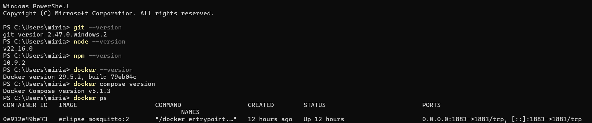
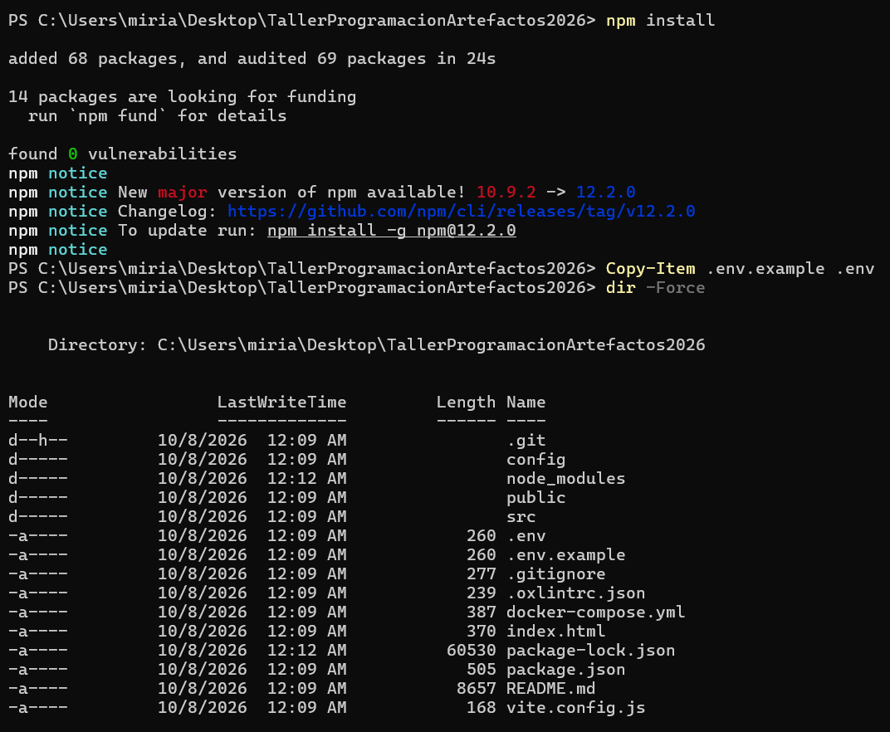
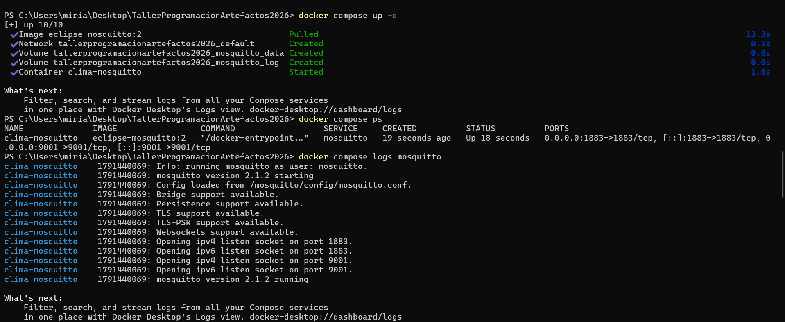

Laboratorio 6 - Visualización de datos IoT con MQTT, Mosquitto y React
Introducción
En los laboratorios anteriores se utilizó Adafruit IO para enviar y visualizar información proveniente del ESP32. Esta plataforma facilita el desarrollo de aplicaciones IoT porque integra herramientas para recibir datos, organizar la información y crear dashboards.
Sin embargo, MQTT no depende de una única plataforma. Existen otras herramientas que permiten construir soluciones más personalizadas y tener un mayor control sobre la forma en que los datos son recibidos y visualizados.
En este laboratorio se utilizará Eclipse Mosquitto como broker MQTT y una aplicación desarrollada en React para visualizar los datos enviados por un ESP32.
El ESP32 obtendrá información de temperatura, humedad e iluminación, la publicará mediante MQTT y el dashboard mostrará las mediciones en tiempo real.
Arquitectura del laboratorio
Antes de comenzar con la configuración del proyecto, es importante comprender cómo se comunicarán los diferentes componentes que se utilizarán durante el laboratorio.
A diferencia de Adafruit IO, donde varias funciones se encuentran integradas dentro de una misma plataforma, en este laboratorio cada herramienta tendrá una función específica.
Sensores
│
▼
ESP32
│
│ MQTT
▼
Mosquitto
│
│ WebSocket
▼
React
│
▼
Dashboard
ESP32
El ESP32 será el dispositivo encargado de obtener las mediciones de los sensores. En este laboratorio se trabajará con datos de temperatura, humedad e iluminación.
Después de obtener las mediciones, el ESP32 las publicará mediante MQTT utilizando diferentes topics.
Mosquitto
Eclipse Mosquitto será el broker MQTT del sistema. Su función será recibir los mensajes publicados por el ESP32 y distribuirlos a los clientes que estén suscritos a los topics correspondientes.
En este proyecto, Mosquitto se ejecutará dentro de un contenedor de Docker. Más adelante se explicará cómo levantar y comprobar este servicio.
React
React se utilizará para ejecutar el dashboard web del laboratorio. La aplicación se conectará a Mosquitto, recibirá las mediciones publicadas por el ESP32 y actualizará la interfaz en tiempo real.
De esta manera, el navegador no recibe directamente la información del ESP32. Los datos pasan primero por el broker MQTT.
Flujo de una medición
Por ejemplo, si el sensor registra una temperatura de 25.4 °C, el proceso será el siguiente:
DHT11
│
▼
25.4 °C
│
▼
ESP32
│
│ publica en:
│ clima/esp32/temperatura
▼
Mosquitto
│
▼
React
│
▼
Dashboard: 25.4 °C
Preparación del entorno
Antes de descargar el proyecto, es necesario comprobar que la computadora cuenta con las herramientas que se utilizarán durante el laboratorio. Cada una cumple una función diferente dentro de la arquitectura.
Herramientas necesarias
| Herramienta | ¿Para qué se utilizará? |
|---|---|
| Git | Permitirá clonar el repositorio del laboratorio desde GitHub. |
| Node.js y npm | Se utilizarán para instalar las dependencias y ejecutar la aplicación desarrollada en React. |
| Docker | Permitirá ejecutar Mosquitto dentro de un contenedor sin tener que instalar y configurar manualmente el broker. |
| Docker Compose | Se utilizará para levantar Mosquitto utilizando la configuración incluida en el proyecto. |
| Arduino IDE | Se utilizará posteriormente para programar el ESP32. |
1. Comprobar Git
Abra una terminal. En Windows puede utilizar PowerShell. Ejecute:
git --versionSi Git está instalado correctamente, aparecerá una respuesta similar a:
git version 2.47.0.windows.22. Comprobar Node.js y npm
React necesita Node.js para poder ejecutarse. npm se instala junto con Node.js y se utiliza para gestionar las dependencias del proyecto.
Ejecute:
node --versionDespués:
npm --versionAmbos comandos deben mostrar un número de versión.
3. Comprobar Docker
En este laboratorio Mosquitto se ejecutará dentro de Docker. Esto permitirá levantar el broker utilizando la misma configuración en diferentes computadoras.
Primero compruebe Docker:
docker --versionDespués compruebe Docker Compose:
docker compose versionEl segundo comando debe indicar que se está utilizando Docker Compose v2.
4. Comprobar que Docker está ejecutándose
Tener Docker instalado no significa necesariamente que el servicio se encuentre activo. Para comprobarlo, ejecute:
docker psSi Docker está funcionando correctamente, aparecerá una tabla con los contenedores activos. La tabla puede estar vacía y aun así indicar que Docker está funcionando.
CONTAINER ID IMAGE COMMAND CREATED STATUS PORTS NAMES5. Arduino IDE
También será necesario contar con Arduino IDE, ya que posteriormente se cargará al ESP32 el programa encargado de leer los sensores y publicar los datos mediante MQTT.
En esta etapa únicamente se debe comprobar que Arduino IDE puede abrirse correctamente. La configuración y programación del ESP32 se realizará más adelante.

docker ps.
Clonar el repositorio
El proyecto base del laboratorio se encuentra almacenado en GitHub. Para trabajar con él será necesario crear una copia local en la computadora utilizando Git.
Al clonar un repositorio se descargan sus archivos y su estructura completa, permitiendo ejecutar y modificar el proyecto desde la computadora.
1. Obtener la dirección del repositorio
Ingrese al repositorio del laboratorio en GitHub y seleccione el botón Code. En la opción HTTPS, copie la URL mostrada.
2. Abrir PowerShell
Abra una nueva ventana de PowerShell y ubíquese en la carpeta donde desea guardar el proyecto.
Por ejemplo, para utilizar el Escritorio:
cd "$HOME\Desktop"3. Clonar el repositorio
Ejecute el comando git clone seguido de la dirección HTTPS
copiada anteriormente:
git clone URL_DEL_REPOSITORIOPor ejemplo:
git clone https://github.com/usuario/TallerProgramacionArtefactos2026.gitGit descargará automáticamente los archivos del proyecto y creará una carpeta con el nombre del repositorio.
4. Entrar a la carpeta del proyecto
Una vez finalizada la descarga, ingrese a la carpeta:
cd TallerProgramacionArtefactos20265. Comprobar los archivos
Ejecute:
dirEntre los archivos y carpetas del proyecto deben aparecer elementos como:
config
public
src
.env.example
docker-compose.yml
package.json
package-lock.json
vite.config.js
README.mdPreparar React
El dashboard del laboratorio fue desarrollado con React. Antes de poder ejecutarlo, es necesario instalar las dependencias del proyecto y preparar el archivo de configuración que utilizará la aplicación.
React será la interfaz encargada de mostrar los datos recibidos mediante MQTT, como temperatura, humedad e iluminación.
1. Verificar que se encuentra en la carpeta del proyecto
Antes de ejecutar los siguientes comandos, compruebe que PowerShell se encuentra dentro de la carpeta del repositorio:
cd "$HOME\Desktop\TallerProgramacionArtefactos2026"
Puede comprobar la ubicación actual observando la ruta que aparece antes
del símbolo > en PowerShell.
2. Instalar las dependencias
El archivo package.json contiene la lista de librerías y
dependencias necesarias para ejecutar la aplicación.
Para instalarlas, ejecute:
npm install
npm leerá el archivo package.json y descargará las
dependencias necesarias dentro de una carpeta llamada
node_modules.
3. Crear el archivo de variables de entorno
El proyecto incluye un archivo llamado .env.example que contiene
la configuración base que necesita React para conectarse al broker MQTT.
Para crear el archivo de configuración que utilizará la aplicación, ejecute en PowerShell:
Copy-Item .env.example .env
Este comando crea una copia llamada .env.
4. ¿Qué contiene el archivo .env?
El archivo .env contiene variables de configuración utilizadas
por React. Para este laboratorio se incluyen las siguientes:
VITE_MQTT_URL=ws://localhost:9001
VITE_MQTT_TEMPERATURE_TOPIC=clima/esp32/temperatura
VITE_MQTT_HUMIDITY_TOPIC=clima/esp32/humedad
VITE_MQTT_SUNLIGHT_TOPIC=clima/esp32/luzLa primera variable indica la dirección que utilizará React para conectarse a Mosquitto mediante WebSocket.
Las otras tres variables indican los topics MQTT que utilizará el dashboard para recibir cada tipo de información.
| Variable | Función |
|---|---|
VITE_MQTT_URL |
Dirección utilizada por React para conectarse al broker MQTT. |
VITE_MQTT_TEMPERATURE_TOPIC |
Topic utilizado para recibir la temperatura. |
VITE_MQTT_HUMIDITY_TOPIC |
Topic utilizado para recibir la humedad. |
VITE_MQTT_SUNLIGHT_TOPIC |
Topic utilizado para recibir el nivel de iluminación. |
5. Comprobar que el archivo fue creado
Para mostrar también los archivos ocultos de la carpeta, ejecute:
dir -ForceDeben aparecer ambos archivos:
.env
.env.example.env.
La dirección ws://localhost:9001 funcionará mientras React
y Mosquitto se ejecuten en la misma computadora.

npm install, creación del archivo .env
y comprobación de los archivos del proyecto.
Mosquitto y Docker
En este laboratorio se utilizará Eclipse Mosquitto como broker MQTT. El broker es el componente encargado de recibir los mensajes publicados por los dispositivos y enviarlos a los clientes que se encuentren suscritos a los topics correspondientes.
Para facilitar su instalación y configuración, Mosquitto se ejecutará dentro de un contenedor de Docker.
¿Cómo se utilizará Mosquitto?
En este proyecto Mosquitto permitirá dos tipos de conexión:
| Puerto | Uso |
|---|---|
1883 |
Conexión MQTT utilizada posteriormente por el ESP32 para publicar las mediciones de los sensores. |
9001 |
Conexión mediante WebSocket utilizada por la aplicación React para recibir los mensajes MQTT desde el navegador. |
ESP32
│
│ MQTT :1883
▼
Mosquitto
▲
│ WebSocket :9001
│
React
1. Verificar que Docker Desktop esté activo
En Windows, abra Docker Desktop y espere hasta que Docker indique que se encuentra ejecutándose.
También puede comprobarlo desde PowerShell utilizando:
docker psSi Docker responde correctamente, puede continuar con el siguiente paso.
2. Levantar Mosquitto
Asegúrese de encontrarse en la carpeta principal del proyecto, donde
está ubicado el archivo docker-compose.yml.
Ejecute:
docker compose up -d
Este comando utiliza el archivo docker-compose.yml para
crear y ejecutar el contenedor de Mosquitto.
La opción -d permite que el contenedor continúe
ejecutándose en segundo plano mientras se siguen utilizando otras
terminales.
3. Comprobar el contenedor
Para verificar que Mosquitto se encuentra activo, ejecute:
docker compose psDebe aparecer un contenedor llamado:
clima-mosquittoy su estado debe indicar que se encuentra activo.
También deben aparecer los puertos:
1883
9001clima-mosquitto debe aparecer con estado
Up y los puertos 1883 y 9001 deben estar disponibles.
4. Revisar los mensajes de Mosquitto
Docker permite consultar los mensajes generados por el broker durante su ejecución. Para hacerlo, ejecute:
docker compose logs mosquittoEntre los mensajes deben aparecer líneas similares a:
Opening ipv4 listen socket on port 1883
Opening ipv4 listen socket on port 9001
mosquitto version ... runningEstas líneas indican que Mosquitto está escuchando correctamente las conexiones MQTT y WebSocket necesarias para el laboratorio.
¿Cómo detener Mosquitto?
Al finalizar el laboratorio, el contenedor puede detenerse utilizando:
docker compose downPor ahora no ejecute este comando, ya que Mosquitto debe permanecer activo para los siguientes pasos.

1883 y 9001 deben estar disponibles.